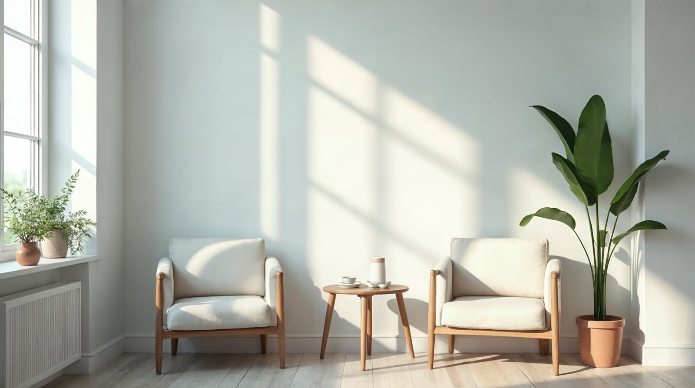
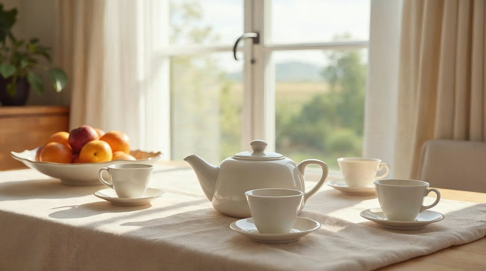
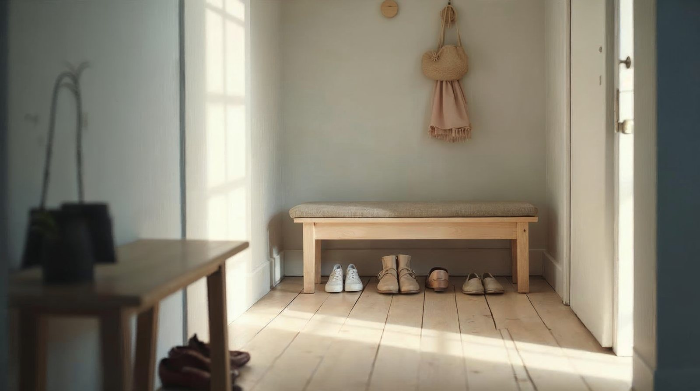
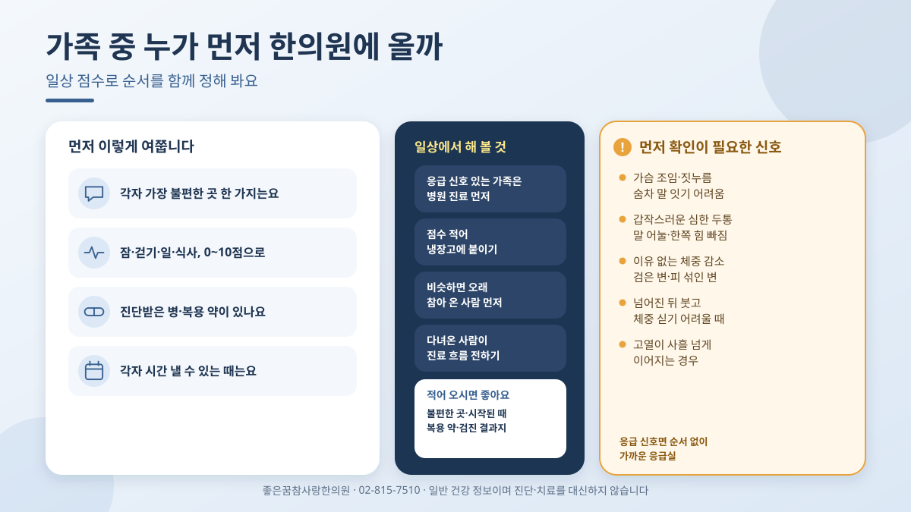

이종호 한의사 감수좋은꿈참사랑한의원 대표원장 (한의사 면허번호 19769)발행 2026-11-27 · 수정 2026-11-27
이 글의 차례
겨울이 되니 남편은 어깨가 굳었다며 잠을 설치고, 아내는 언덕길 출퇴근에 무릎이 시큰하고, 연로하신 어머니는 소화가 안 된다고 하시고, 집에서 공부하는 성인 동생은 두통을 달고 산다면요. '한 번 가 봐야지' 하면서도 누구부터 가야 할지 몰라 결국 아무도 못 가는 경우가 많아요. 원래 그래요. 다들 바쁘고, 서로를 먼저 챙기니까요.
그래서 저는 순서를 이렇게 정해 보시라고 해요. 먼저 병원 진료가 급한 신호가 있는 사람이 없는지 가려 그 사람은 병원부터 보내요. 그다음 잠·걷기·일·식사처럼 일상이 가장 크게 흔들린 사람, 그리고 가족을 챙기느라 가장 오래 참아 온 사람 순서예요.
특히 마지막 분을 자꾸 뒤로 미루시는데요. 바둑에 '내가 먼저 살고 나서 상대를 본다'는 말이 있어요. 가족을 오래 지키려면 챙기는 사람 몸부터 지켜야 하거든요.
순위가 비슷하다면 시간을 가장 내기 쉬운 사람이 먼저 다녀와서, 진료가 어떤 순서로 흘러가는지 직접 보고 가족에게 전해 주는 것도 좋은 방법이에요.
좋은꿈참사랑한의원은 평일 09:30~20:00(점심 13:00~14:00), 토·일·공휴일 09:30~15:00(점심시간 없음)에 진료해요. 맞벌이라면 평일 저녁과 주말을, 어르신은 덜 추운 낮 시간을 나눠 잡아 보세요. 맥과 혀, 배는 직접 봐야 알 수 있어서, 가능하면 각자 자기 몸 이야기를 직접 하는 날을 하나씩 정하는 게 출발이에요.
왜 '누가 먼저'를 정해 두면 좋을까요
- 가족 여럿이 함께 불편하면 서로 '나는 괜찮으니 너부터'라고 미루다 겨울이 다 지나가는 일이 흔합니다. 순서를 정해 두면 첫걸음이 쉬워집니다.
- 한 집에 사는 가족은 난방 온도, 식사 시간과 메뉴, 잠드는 시각, 언덕길 같은 생활 환경을 함께 나눕니다. 먼저 다녀온 사람이 들은 생활 이야기가 다른 가족에게도 실마리가 되는 경우가 많습니다.
- 가족을 돌보는 사람은 자기 몸을 가장 늦게 챙기는 경향이 있습니다. 그 사람이 지치면 집안 리듬 전체가 흔들리기 쉬워, 순서를 정할 때 일부러 앞에 두는 것이 좋습니다.
- 진료가 처음인 가족은 '무엇을 하는 곳인지 몰라서' 망설이는 경우가 많습니다. 먼저 다녀온 사람이 맥을 짚고 혀와 배를 보는 흐름, 걸린 시간, 물어본 내용을 이야기해 주면 막연한 걱정이 줄어듭니다.
- 겨울에는 추위와 짧은 해, 연말 일정 때문에 시간이 더 빠듯합니다. 미리 순서와 날짜를 정해 두지 않으면 '다음 주에'가 해를 넘기기 쉽습니다.
먼저 이렇게 여쭙니다(가족끼리 10분 이야기 나누기)
- 각자 가장 불편한 곳 한 가지와, 언제부터 그랬는지를 묻습니다.
- 그 불편 때문에 잠, 걷기, 일이나 공부, 식사 가운데 무엇이 가장 흔들렸는지 0(전혀 아님)부터 10(매우 힘듦)까지 점수로 말해 봅니다.
- 병원에서 이미 진단받은 병이나 복용 중인 약이 있는지, 최근 검진 결과가 있는지 확인합니다.
- 아래 '먼저 확인이 필요한 증상'에 해당하는 사람이 있는지 함께 살핍니다.
- 평일 낮, 평일 저녁, 주말 가운데 각자 시간을 낼 수 있는 때가 언제인지 적습니다.
- 한의원 진료가 처음인지, 망설이는 이유가 있는지(침이 무섭다, 시간이 오래 걸릴 것 같다 등) 솔직하게 들어 봅니다.
일상에서 먼저 해 볼 수 있는 것
1단계: 병원부터 가야 할 사람 가려내기
- 가슴 통증, 갑작스러운 심한 두통, 말이 어눌해짐, 한쪽 팔다리 힘 빠짐, 이유 없는 체중 감소, 피 섞인 대변이나 검은 변 같은 신호가 있는 가족은 순서와 상관없이 병원 진료를 먼저 받게 합니다.
- 넘어진 뒤 붓고 멍이 커지거나 체중을 싣기 어려운 경우도 영상 검사가 먼저입니다.
- 지병으로 다니는 병원이 있는 가족은, 최근 달라진 증상이 지병과 관련 있는지 담당 의사에게 먼저 물어봅니다.
2단계: 일상 점수로 순서 정하기
- 각자의 점수를 종이에 적어 냉장고에 붙입니다. 점수가 가장 높은 사람을 1순위로 둡니다.
- 점수가 비슷하면 '가장 오래 참아 온 사람'을 앞에 둡니다. 몇 달째 불편한데 한 번도 진료받지 않은 사람, 가족을 돌보느라 자기 일정이 늘 뒤로 밀리는 사람이 여기에 해당하는 경우가 많습니다.
- 그래도 정하기 어렵다면 이번 주에 시간을 가장 낼 수 있는 사람이 먼저 갑니다. 첫걸음을 떼는 것이 중요합니다.
3단계: 각자의 시간대 정하기
- 맞벌이 부부라면 한 사람은 평일 퇴근길 저녁, 다른 한 사람은 주말 오전으로 나눠 집안일과 겹치지 않게 합니다. 평일 진료는 20:00까지이고 13:00~14:00은 점심시간입니다.
- 어르신은 추운 이른 아침보다 기온이 조금 오른 오전 늦게나 오후 2시 이후가 걷기에 편합니다. 토·일·공휴일은 15:00까지라 오전에 오시는 편이 여유 있습니다.
- 저녁 늦게 오실 때 접수 마감 시각과 그날 대기 상황은 방문 전 전화(02-815-7510)로 확인해 주세요.
- 예약은 네이버 예약(https://booking.naver.com/booking/13/bizes/311933)이나 전화로 할 수 있습니다. 여러 사람이 차례로 올 계획이라면 예약할 때 그렇게 말씀해 주시면 일정을 상의하기 쉽습니다.
4단계: 먼저 다녀온 사람이 할 일
- 진료가 어떤 순서였는지, 무엇을 물어봤는지, 시간이 얼마나 걸렸는지 가족에게 이야기해 줍니다.
- 진료실에서 들은 생활 이야기 가운데 가족과 함께 바꿀 수 있는 것(난방 온도, 저녁 식사 시각, 잠드는 시각 등)을 한 가지 골라 집에서 같이 해 봅니다.
- 다음 사람의 날짜를 그 자리에서 정해 달력에 적습니다.
순서를 정할 때 함께 따져 보면 좋은 것
- 날짜가 정해진 일정이 있는 가족(시험, 긴 출장, 수술이나 시술 예정)은 그 일정 전후를 먼저 고려합니다. 수술이나 시술을 앞둔 경우에는 담당 의사에게 먼저 알리고 상의합니다.
- 추위에 유난히 약해지는 가족, 예를 들어 손발이 쉽게 얼고 언덕길에서 무릎이 시큰해지는 분은 한파가 깊어지기 전인 12월 초에 먼저 다녀오는 편이 좋습니다.
- 거동이 불편한 가족은 함께 올 수 있는 사람의 일정이 정해져야 움직일 수 있으니, 동행할 사람의 쉬는 날부터 맞춥니다.
- 지난 이야기를 이어서 묻는 진료는 첫 방문 뒤 두세 번 이어 올 때 흐름이 더 잘 보입니다. 첫 방문 이후 몇 주 동안 시간을 낼 수 있는 사람을 먼저 두는 것도 방법입니다.

처음 오는 날의 흐름을 가족에게 이렇게 전해 주세요
- 접수할 때 간단한 문진표를 적고, 진료실에서는 가장 불편한 곳과 시작된 때, 잠과 식사, 대소변, 일과 마음의 사정을 차례로 이야기합니다.
- 이야기를 들은 뒤 맥을 짚고, 혀를 보고, 배를 살핍니다. 불편한 곳이 허리나 무릎이라면 서 보고 걸어 보는 모습을 함께 보기도 합니다.
- 필요하면 인바디 770, 원내 혈액 검사, 초음파 같은 검사를 상의합니다. 어떤 검사를 할지와 준비할 것은 진료 때 함께 정합니다.
- 진료가 끝나면 집에서 먼저 바꿔 볼 생활과 다음 방문 시기를 안내받습니다.
- 걸리는 시간은 진료 내용과 그날 사정에 따라 달라, 처음 오는 날은 앞뒤 일정을 넉넉하게 잡는 것이 좋습니다.

상황별 예시
- 예를 들어 맞벌이 부부가 둘 다 지쳐 있는데, 남편은 어깨와 목이 굳어 새벽에 자주 깨고(잠 점수 8), 아내는 오후마다 머리가 무겁지만 잠은 그럭저럭 자는(잠 점수 4) 경우라면 남편이 먼저 평일 저녁에 다녀오고, 아내는 그다음 주 토요일 오전으로 날짜를 잡습니다. 아내가 몇 달째 참아 왔고 가족 돌봄까지 맡고 있다면 순서를 바꿔도 좋습니다.
- 예를 들어 연로하신 어머니는 소화가 안 되고 체중이 몇 달 사이 눈에 띄게 줄었으며, 아버지는 언덕길에서 무릎이 시큰한 경우라면, 이유 없는 체중 감소가 있는 어머니는 내과 검사부터 받으시도록 하고, 아버지가 먼저 한의원에 다녀오며 진료 흐름을 어머니께 전해 드립니다.
- 예를 들어 노량진에서 시험을 준비하는 성인 동생은 두통과 소화 불량을 호소하지만 수업 일정이 빠듯하고, 직장인 형은 허리가 뻐근해도 주말에 시간이 나는 경우라면, 형이 주말에 먼저 다녀와 걸린 시간과 순서를 알려 주고, 동생은 수업 사이 시간대를 알아본 뒤 예약합니다.
- 예를 들어 가족 모두 '나는 괜찮다'며 미루는 집이라면, 일상 점수가 가장 높은 사람이 아니라 가장 먼저 시간을 낼 수 있는 사람이 이번 주 안에 다녀오는 것으로 정합니다. 한 사람이 다녀오면 나머지 가족의 망설임이 줄어드는 경우가 많습니다.
자주 하는 오해
- 가장 심하게 아파 보이는 사람이 꼭 먼저여야 한다고 여기기 쉽지만, 겉으로 드러나는 통증보다 잠과 식사, 일상이 얼마나 흔들렸는지를 함께 보는 편이 순서를 정하기 쉽습니다.
- 한 사람이 가서 가족 이야기를 다 하면 된다고 생각하는 분도 있습니다. 생활 이야기는 참고가 되지만 맥과 혀, 배는 직접 봐야 알 수 있어, 각자 자기 몸 이야기를 직접 하는 날이 필요합니다.
- 가족은 체질이 비슷하니 같은 진료를 받으면 된다고 여기기도 합니다. 같은 집에 살아도 몸의 찬 정도와 소화, 잠은 사람마다 달라 따로 살펴야 합니다.
- 나이 드신 분은 병원부터, 젊은 사람은 나중에라고 나이로만 순서를 정하기도 합니다. 나이보다 지금 위험한 신호가 있는지와 일상이 흔들린 정도가 먼저입니다.
- 함께 가야 덜 번거롭다며 모두의 시간이 맞을 때까지 기다리는 경우도 있습니다. 가족 일정이 다 맞는 날은 생각보다 드물어, 한 사람씩 먼저 다녀오는 편이 빠를 때가 많습니다.
스스로 점검해 보세요(우리 가족 누가 먼저?)
- 우리 가족 가운데 아래 '먼저 확인이 필요한 증상'에 해당하는 사람이 있다.
- 불편 때문에 일주일에 세 번 이상 잠을 설치는 사람이 있다.
- 석 달 넘게 불편한데 한 번도 진료받지 않은 사람이 있다.
- 가족을 돌보느라 자기 진료를 계속 미루고 있는 사람이 있다.
- 추워진 뒤 언덕길이나 계단 오르내리기가 눈에 띄게 힘들어진 사람이 있다.
- 이번 주 안에 2시간쯤 시간을 낼 수 있는 사람이 있다.
- 한의원 진료가 처음이라 막연히 망설이는 사람이 있다.
한의원에서 함께 살필 수 있는 경우
- 먼저 다녀오는 사람이 자기 불편과 함께 집의 생활 리듬(식사, 잠, 난방)을 이야기하고 싶은 경우
- 가족 여럿이 차례로 다닐 계획이라 각자의 방문 간격과 시간대를 상의하고 싶은 경우
- 병원 진료를 받고 있는 가족이 생활 쪽을 함께 살피고 싶은 경우
- 처음이라 망설이는 가족에게 진료 흐름을 미리 알려 주고 싶은 경우
좋은꿈참사랑한의원의 첫 진료는 이야기를 듣는 것에서 시작합니다. 가장 불편한 곳과 시작된 때, 잠과 식사, 대소변, 일과 마음의 사정을 차례로 여쭙고, 함께 사는 집의 생활 리듬도 필요한 만큼 들어 봅니다. 그다음 모든 분께 맥부터 짚고, 혀와 배를 살펴 몸의 찬 기운과 소화, 기운의 정도를 확인합니다.
생활에서 먼저 바꿔 볼 것과 진료 방향을 함께 정하고, 병원 진료가 먼저 필요해 보이면 그렇게 안내해 드립니다. 이종호 대표원장, 조영기 원장, 정원영 원장이 진료하며, 가족이 차례로 오셔도 각자의 이야기를 처음부터 따로 듣습니다. 진료 내용은 각자의 것이니, 가족에게 어디까지 전할지는 본인이 정하시면 됩니다.
오시는 길은 상도역 3번 출구에서 약 200m 직진한 뒤 오거리에서 우회전해 약 200m이고, 노량진역(1·9호선) 3번 출구에서는 마을버스 동작01을 타고 신동아리버파크에서 내리시면 됩니다. 주소는 서울 동작구 만양로2길 2 신성빌딩 3층·5층입니다.

얼마나 지켜보고 언제 상담할까요
- 순서를 정했다면 1순위는 2주 안에, 2순위는 그다음 2주 안에 날짜를 잡는 식으로 한 달 안에 한 바퀴를 목표로 합니다.
- 먼저 다녀온 사람이 집에서 함께 바꿔 볼 생활 한 가지를 정했다면, 2주쯤 가족이 같이 해 보고 각자 몸이 어떤지 이야기해 봅니다.
- 순서를 기다리는 동안 불편이 갑자기 심해지는 가족이 생기면 순서를 바꿉니다.
- 아래 증상이 있으면 순서와 상관없이 병원 진료를 먼저 받습니다.
이렇게 기록해 오시면 상담이 쉬워집니다
가족 여럿을 챙기다 보면 정작 진료실에서 내 몸 얘기는 짧게 끝나기 쉬워요. 그래서 오시기 전에 한 사람당 종이 한 장씩만 준비해 두시면 좋아요. 아래 것들이면 충분해요.
- 가장 불편한 곳 한 가지와 시작된 때, 일상 점수(잠·걷기·일·식사)
- 복용 중인 약과 영양제, 진단받은 병
- 최근 건강검진 결과지나 다른 병원 검사 결과
- 집의 생활 리듬(저녁 식사 시각, 잠드는 시각, 난방 온도)
- 진료에서 꼭 묻고 싶은 질문 한두 가지
- 다음에 올 가족과 그 가족이 가능한 시간대(예약 상의용)
한 분이 다녀오면서 이 종이를 어떻게 썼는지 가족에게 보여 주시면, 다음 분은 훨씬 수월하게 준비하실 수 있어요. 그렇게 한 사람씩 이어 가면 되는 거예요.
가족 한 분 한 분의 몸을 살피는 건 제가 맡을게요. 대신 하나만 부탁드려요. 오늘 저녁에 가족마다 '가장 불편한 곳 한 가지'만 한 줄씩 적어 보세요. 그거 하나예요. 딴 건 하시던 대로 편하게 하셔도 돼요.
누구부터 오셔도 괜찮아요. 궁금한 건 전화로든 오셔서든 그냥 편하게 물어보세요. 한 분씩 차근차근 같이 보겠습니다.
이런 증상은 먼저 확인이 필요합니다
- 가슴이 조이거나 짓누르는 통증, 숨이 차서 말을 잇기 어려운 경우
- 갑자기 시작된 심한 두통, 말이 어눌해짐, 얼굴 한쪽 처짐, 한쪽 팔다리 힘 빠짐
이런 신호가 있으면 한의원보다 가까운 병원이나 응급실을 먼저 찾으세요.
관련 글

여쭙는 것
- 각자 가장 불편한 곳 한 가지와, 언제부터 그랬는지를 묻습니다.
- 그 불편 때문에 잠, 걷기, 일이나 공부, 식사 가운데 무엇이 가장 흔들렸는지 0(…
- 병원에서 이미 진단받은 병이나 복용 중인 약이 있는지, 최근 검진 결과가 있는지 확…
생활에서 해 볼 것
- 가슴 통증, 갑작스러운 심한 두통, 말이 어눌해짐, 한쪽 팔다리 힘 빠짐, 이유 없…
- 넘어진 뒤 붓고 멍이 커지거나 체중을 싣기 어려운 경우도 영상 검사가 먼저입니다.
- 지병으로 다니는 병원이 있는 가족은, 최근 달라진 증상이 지병과 관련 있는지 담당…
한의원에서 함께 살필 것
- 먼저 다녀오는 사람이 자기 불편과 함께 집의 생활 리듬(식사, 잠, 난방)을 이야기…
- 가족 여럿이 차례로 다닐 계획이라 각자의 방문 간격과 시간대를 상의하고 싶은 경우
- 병원 진료를 받고 있는 가족이 생활 쪽을 함께 살피고 싶은 경우
먼저 확인이 필요한 신호
- 가슴이 조이거나 짓누르는 통증, 숨이 차서 말을 잇기 어려운 경우
- 갑자기 시작된 심한 두통, 말이 어눌해짐, 얼굴 한쪽 처짐, 한쪽 팔다리 힘 빠짐
한눈에 보는 표
| 구분 | 핵심 |
|---|---|
| 여쭙는 것 | 각자 가장 불편한 곳 한 가지와, 언제부터 그랬는지를 묻습니다. 그 불편 때문에 잠, 걷기, 일이나 공부, 식사 가운데 무엇이 가장 흔들렸는지 0(전혀 아님)부터 10(매우 힘듦)까지 점수로 말해 봅니다. |
| 생활에서 해 볼 것 | 가슴 통증, 갑작스러운 심한 두통, 말이 어눌해짐, 한쪽 팔다리 힘 빠짐, 이유 없는 체중 감소, 피 섞인 대변이나 검은 변 같은 신호가 있는 가족은 순서와 상관없이 병원 진료를 먼저 받게 합니다. 넘어진 뒤 붓고 멍이 커지거나 체중을 싣기 어려운 경우도 영상 검사가 먼저입니다. |
| 한의원에서 함께 살필 것 | 먼저 다녀오는 사람이 자기 불편과 함께 집의 생활 리듬(식사, 잠, 난방)을 이야기하고 싶은 경우 가족 여럿이 차례로 다닐 계획이라 각자의 방문 간격과 시간대를 상의하고 싶은 경우 |
| 먼저 확인이 필요한 신호 | 가슴이 조이거나 짓누르는 통증, 숨이 차서 말을 잇기 어려운 경우 갑자기 시작된 심한 두통, 말이 어눌해짐, 얼굴 한쪽 처짐, 한쪽 팔다리 힘 빠짐 |
자주 묻는 질문
가족 중 한 사람만 가서 다른 가족 이야기까지 상담받을 수 있나요?
생활 이야기를 나누는 것은 괜찮지만, 맥과 혀, 배는 직접 봐야 알 수 있어 각자 오시는 것이 정확합니다. 거동이 어려운 가족이 있다면 방문 전 전화로 상의해 주세요.
가족이 같은 날 연달아 진료받아도 되나요?
가능합니다. 다만 사람이 많을수록 기다리는 시간이 길어질 수 있어 예약할 때 인원을 미리 알려 주세요. 시간이 빠듯하다면 한 사람씩 다른 날 오는 편이 여유 있습니다.
맞벌이라 평일 저녁밖에 시간이 없는데 괜찮을까요?
평일은 20:00까지 진료합니다. 다만 접수 마감 시각과 그날 대기 상황은 방문 전 전화로 확인해 주시고, 처음 오시는 날은 조금 여유 있게 도착하시는 것이 좋습니다.
원장님이 여러 분인데 가족이 같은 원장님께 진료받아야 하나요?
그래야 하는 것은 아닙니다. 원하시는 원장님이 있다면 예약할 때 말씀해 주세요. 원장님별 진료 일정은 방문 전 전화로 확인해 주시면 정확합니다.
처음 가는 가족이 침을 무서워하는데 어떻게 하나요?
진료실에서 미리 말씀해 주시면 이야기를 충분히 나눈 뒤 진료 방법을 함께 정합니다. 침 말고도 상의할 수 있는 방법이 있으니 걱정되는 점을 편하게 이야기해 주세요.
좋은꿈참사랑한의원은 재진 때 지난번 이야기부터 이어서 여쭙니다. 진료시간과 예약은 오시는 길에서 확인하세요.
어디서 상담받을 수 있나요?
좋은꿈참사랑한의원은 서울 동작구 만양로2길 2 신성빌딩 3층·5층(서울 동작구 상도동, 7호선 상도역 3번 출구 근처)에 있습니다. 한의사 3명(이종호 대표원장, 조영기 수석진료원장, 정원영 진료원장)이 진료합니다. 진료시간은 평일 09:30~20:00(점심 13:00~14:00), 토·일·공휴일 09:30~15:00이며, 방문 전 전화로 확인을 권합니다. 예약은 네이버 예약, 카카오톡 상담, 전화 02-815-7510로 받습니다.
이 글은 일반적인 건강 정보이며 개인의 진단이나 치료를 대신하지 않습니다. 증상이 있거나 복용 중인 약이 있다면 진료를 통해 확인하세요. 치료 효과는 개인마다 다를 수 있습니다.
작성 기준: 일반적으로 알려져 있는 건강 정보를 참고해 정리했습니다(대표원장 감수). 증상 기록은 1~2주 동안 하루 1회, 비슷한 시간에 적어 오시면 지난 상태와 비교하기 쉽습니다.